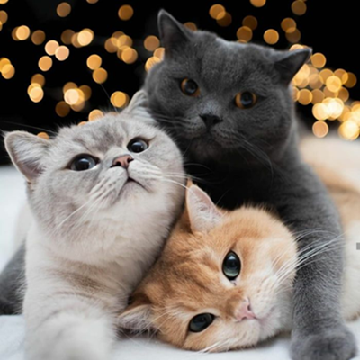
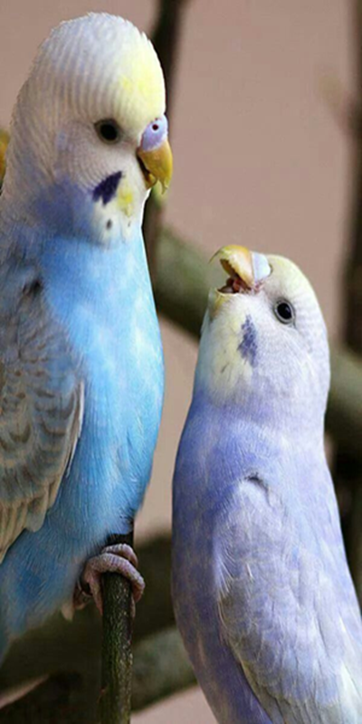
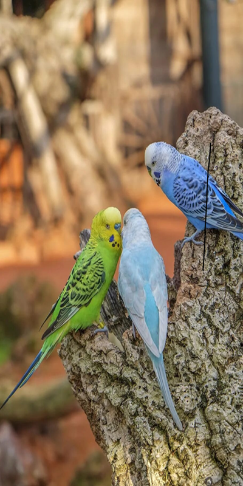

Чтобы ваш пушистый друг был счастлив и здоров, нужно заботиться о его питании, чистоте и здоровье.
Регулярно меняйте им воду и убирайте лоток. Кормите их качественным кормом и не забывайте о витаминах.
Не забывайте расчесывать шерсть, чтобы избежать запутывания и шерстяных комков. Регулярные визиты к
ветеринару помогут предотвратить болезни. И самое главное — дарите своему котику много ласки и внимания,
ведь они очень любят заботу и тепло. Ваш пушистый друг обязательно ответит вам своей любовью!

